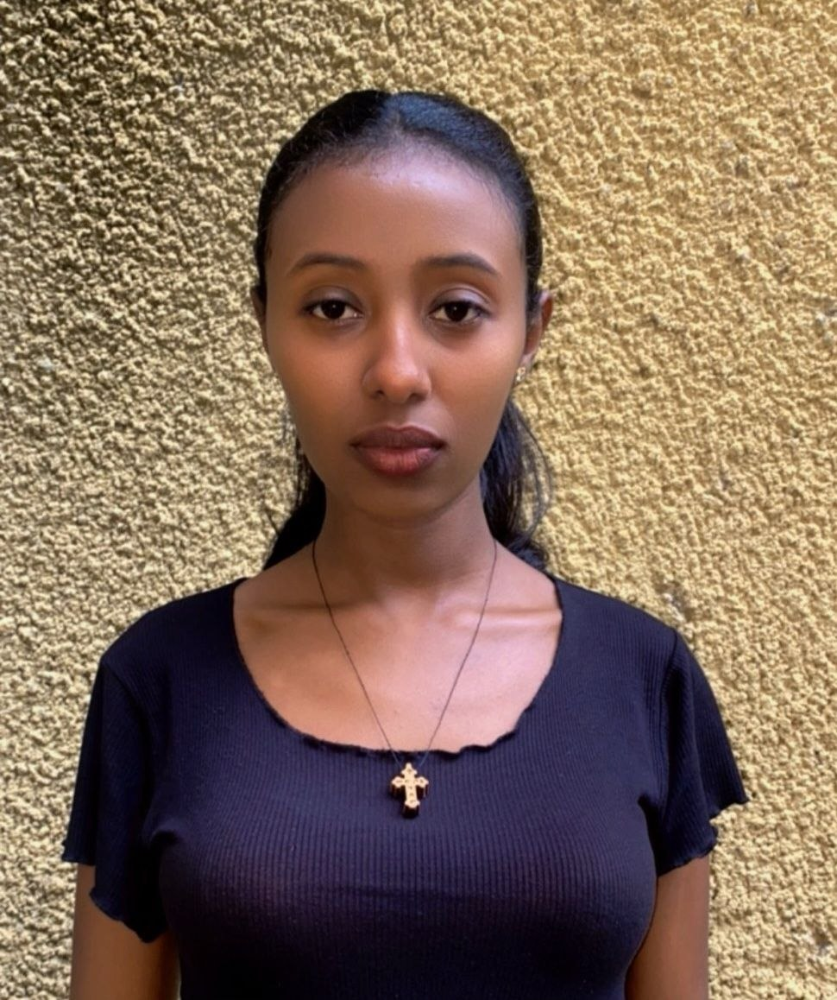

Balemlay Tadesse
Computer Science Student | Aspiring Software Developer
Skilled in C#, Java, and SQL | Passionate about problem solving and building applications
About Me
I am a dedicated Computer Science student with a strong interest in software development, databases, and problem solving. I enjoy learning how software systems are built and how technology can be used to solve real-world problems.
I have practical experience with programming languages such as C#, Java, and SQL, and I am continuously improving my skills in object-oriented programming, database management, and application development.
I am passionate about building projects, learning new technologies, and working in team environments where I can grow as a developer. My goal is to become a professional software engineer and contribute to meaningful software solutions.
Career Objective
To become a skilled software developer by improving my programming, database, and problem-solving abilities, and to gain real-world experience through internships or entry-level opportunities in the software industry.
Skills
Software Development
C# Programming, Java Programming, Software Development Fundamentals
Programming Concepts
Object-Oriented Programming (OOP), Data Structures Basics, Problem Solving
Database & Tools
SQL, Database Design, Git, GitHub, VS Code
Soft Skills
Debugging & Testing, Team Collaboration, Communication, Leadership
Projects
Contact Me
View CV
Click View CV to display the document.